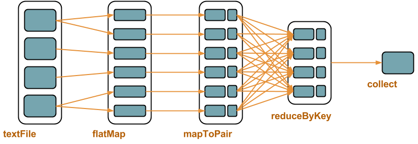

class: center, middle <img src="images/spark-logo.png" width="80%"> Alexis Seigneurin - [@aseigneurin](https://twitter.com/ASeigneurin) Ippon Technologies - [@ippontech](https://twitter.com/ippontech) --- # Spark - Traitement distribué de large volumes de données - Commodity hardware --- # Histoire - 2009 : AMPLab de l'Université de Berkeley - Juin 2013 : "Top-level project" de la fondation Apache - Mai 2014 : version 1.0.0 - Actuellement : version 1.1.0 --- # Use cases - Analyse de logs - Traitement de fichiers texte - Analytics - Recherche distribuée (Google, avant) - Détection de fraude - Recommendation (articles, produits...) --- # Proximité avec Hadoop - Mêmes use cases - Même modèle de développement : MapReduce - Intégration dans l'écosystème --- # Plus simple qu'Hadoop - API plus simple à prendre en main - Modèle MapReduce "relâché" - Spark Shell : traitement interactif --- # Plus rapide qu'Hadoop [Spark officially sets a new record in large-scale sorting](http://databricks.com/blog/2014/11/05/spark-officially-sets-a-new-record-in-large-scale-sorting.html) (5 novembre 2014) - Tri de 100 To de données - **Hadoop MR : 72 minutes** avec 2100 noeuds (50400 cores) - **Spark : 23 minutes** avec 206 noeuds (6592 cores) --- # Ecosystème Spark - Spark - Spark Shell - Spark Streaming - Spark SQL - MLlib - GraphX --- # Intégration * Yarn, Zookeeper, Mesos * HDFS * Cassandra * Elasticsearch --- class: center, middle # Fonctionnement --- class: dense # Stockage & traitements HDFS - Hadoop Distributed File System - Stockage distribué - Tolérant à la panne MapReduce - Framework (API) - Traitement parallèle - Tolérant à la panne --- # Colocation données & traitement - Traiter la donnée là où elle se trouve - Eviter les network I/Os --- class: dense # MapReduce - map() : découpe le problème -> distribution sur les noeuds - reduce() : remonte les résultats <img src="images/mapreduce.png" width="80%"> --- # Manipulation de _tuples_ : - Clé - Valeur - Les tuples sont indépendants les uns des autres --- # Word count - Découpage des fichiers par fragments de 128 Mo (framework) - Découpage des fragments par lignes (framework) - Découpage des lignes en mots (map) - Comptage des mots (reduce) - Sur chaque noeud - Puis sur un noeud pour le résultat final --- class: full # Shakespeare, Hamlet, acte III, scène 1 --- class: dense # Hadoop - Ecriture des résultats intermédiaires sur HDFS - Adapté aux traitements batches, pas au temps réel --- class: dense # Spark - I/Os agressivement optimisées - Une étape peut être un _map_ seul (!_reduce_) - Peut manipuler des types simples (!tuples) --- class: dense # Spark - RDD - Resilient Distributed Dataset - Abstraction, collection traitée en parallèle - Tolérant à la panne - Différentes sources : - Fichier sur HDFS - Fichier local - Collection en mémoire - S3 - ... --- class: dense # Spark - Transformations - Manipule un RDD, retourne un autre RDD - Lazy ! - Exemples : * _map()_ : une valeur → une valeur * _mapToPair()_ : une valeur → un tuple * _filter()_ : filtre les valeurs/tuples * _groupByKey()_ : regroupe la valeurs par clés * _reduceByKey()_ : aggrège les valeurs par clés * _join()_, _cogroup()_... : jointure entre deux RDD --- class: dense # Spark - Actions finales - Ne retournent pas un RDD - Exemples : * _count()_ : compte les valeurs/tuples * _saveAsHadoopFile()_ : sauve les résultats au format Hadoop * _foreach()_ : exécute une fonction sur chaque valeur/tuple * _collect()_ : récupère les valeurs dans une liste (List< T >) --- # Spark - Exemple ```text ... fr Ignifuge 1 17634 fr Ignitron 1 9887 fr Ignorance 4 56569 ... ``` ```java sc.textFile(".../wikipedia/pagecounts") .map(line -> line.split(" ")) .mapToPair(s -> new Tuple2<String, Long>(s[1], Long.parseLong(s[2]))) .reduceByKey((x, y) -> x + y) .collect(); ```  --- class: center, middle # Démo - Spark Shell --- # Démo de Spark Shell ``` $ spark-shell > var lines = sc.textFile(".../data/arbresalignementparis2010.csv") > lines.count() > var trees = lines.filter(s => !s.startsWith("geom")) > var treesSplit = trees.map(line => line.split(";")) > var heights = treesSplit.map(fields => fields(3).toFloat) > heights = heights.filter(h => h > 0) > heights.sum() / heights.count() ``` --- class: center, middle # Spark en Cluster --- # Spark en Cluster Plusieurs options - YARN - Mesos - Standalone - Workers démarrés individuellement - Workers démarrés par le master --- class: center, middle # Spark Streaming --- # Micro-batches - Découpe un flux continu en batches - API identique --- # DStream - Discretized Streams - Séquence de RDDs --- # Spark Streaming Sources : - Kafka - Flume - HDFS - ZeroMQ - Twitter - ...